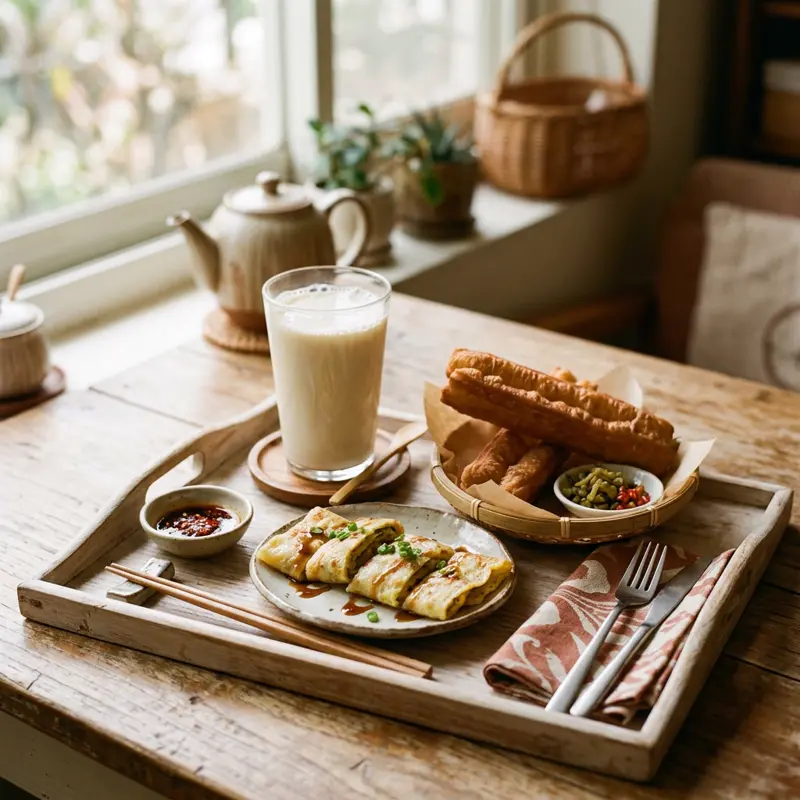

대만의 아침식사 문화는 독립적인 산업이라 할 만큼 발달해 있어요. 떠우장(豆漿, 두유), 딴빙(蛋餅, 계란전병), 판퇀(飯糰, 주먹밥) 등을 파는 조식 전문점이 새벽부터 문을 열고, 대부분 포장 위주라 회전이 빠릅니다.
무엇이 특별할까요?
01
떠우장 온/냉
두유는 따뜻한 셴또우장(짠맛)과 시원한 단맛 버전 중 고를 수 있어요.
02
딴빙 커스텀
계란전병 안에 치즈, 참치, 옥수수 등 토핑을 추가할 수 있는 곳이 많아요.
03
포장 주문 팁
현지인들은 대부분 포장해가요. 자리가 협소한 매장이 많으니 참고하세요.
이렇게 즐겨보세요
- ✓영업시간이 대부분 새벽~오전 11시로 짧음
- ✓메뉴판에 한자만 있는 경우가 많아 사진으로 미리 확인하고 가면 편함
- ✓포장(外帶)과 매장(內用) 구분해서 주문하기
- ✓현금 결제 위주인 노포가 많음
Real spots
전체 화면 지도로 보기 →
여행자들이 등록한 진짜 맛집
이 카테고리에 실제로 등록된 맛집을 지역별로 모아봤어요. 새로 등록되면 여기에도 바로 반영돼요. 핀을 눌러 추천 투표도 남길 수 있어요.
📍타이베이
📍가오슝
📍타이난
Join the map
지금 등록하기 →
나만의 맛집을 공유해주세요 🤫
여러분의 발견이 다른 여행자들에게 진짜 대만을 경험하게 해줍니다.